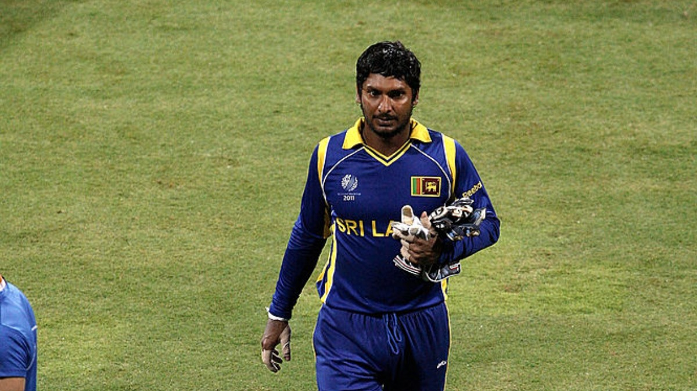

Kumar Chokshanada Sangakkara (born 27 October 1977) is a Sri Lankan cricket commentator, former professional cricketer, businessman, ICC Hall of Fame inductee, and the former president of Marylebone Cricket Club. He is widely regarded as one of the greatest wicket-keeper-batters in the history of the sport. He was officially rated in the top three current batsmen in the world in all three formats of the game at various stages of his international career.Sangakkara scored 28,016 runs in international cricket across all formats in a career that spanned 15 years.[6] At retirement, he was the second-highest run-scorer in ODI cricket, next only to Sachin Tendulkar, and the sixth-highest run scorer in Test cricket.
 About Kumar Sangakkara